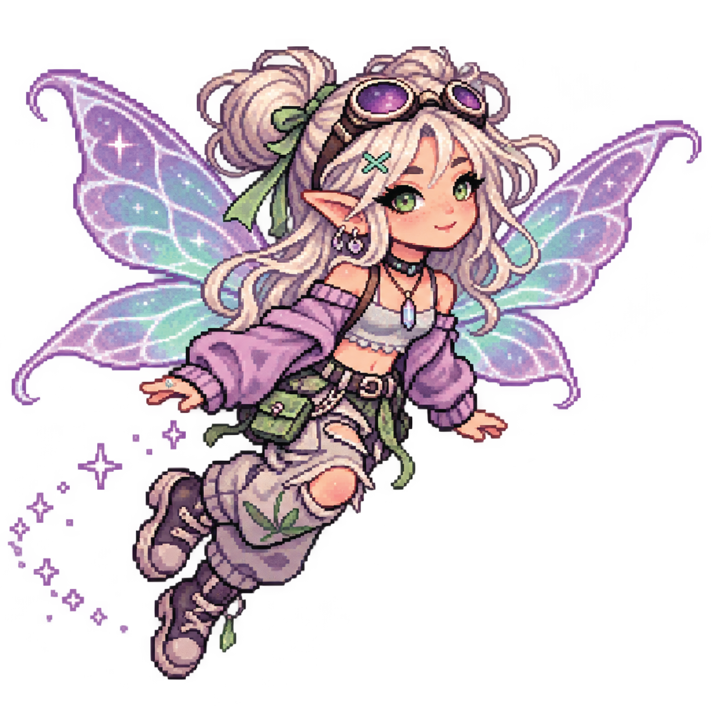
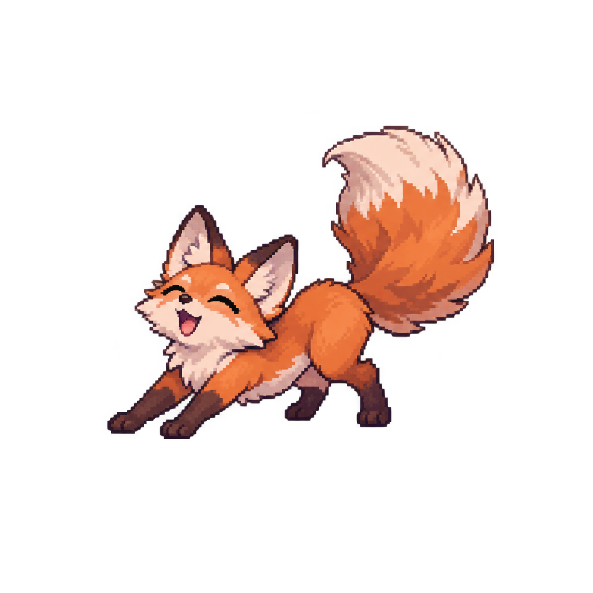

✿ CYBERFAE ✿
DIGITAL GARDEN OS // GROW YOUR WORLD
✿ THE LIVING GARDEN


0 actions completed
Strawberry growth0/3
Complete an intention to help your garden grow.
Every little action helps something grow. Your garden is a reflection of your progress.
✿ DAILY INTENTIONS
YOUR QUESTS
✿ FIELD NOTES
Progress is cultivated through action.
Rest is part of regeneration, too.
Progress is cultivated through action.
Rest is part of regeneration, too.